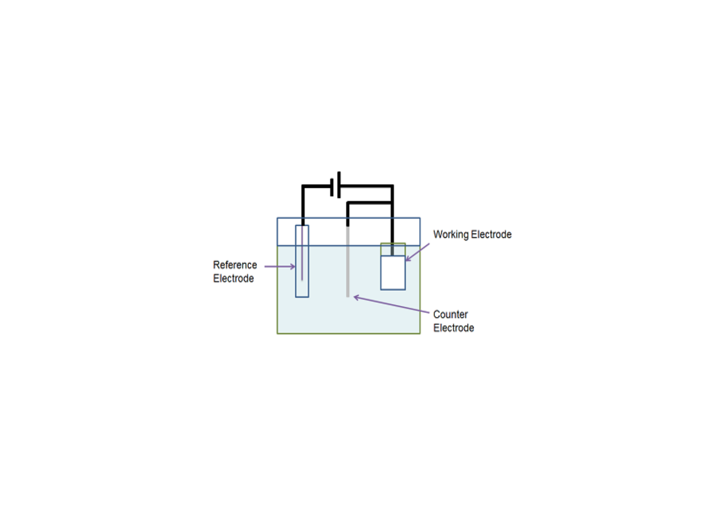

Electrochemistry
A Standard 3-electrode Cell
A standard 3 electrode cell comprises a working electrode (WE), a reference electrode (RE) and a counter electrode (CE). There are many different reference electrodes available, so it is vital that the type of reference electrode is quoted along with any potentials given.